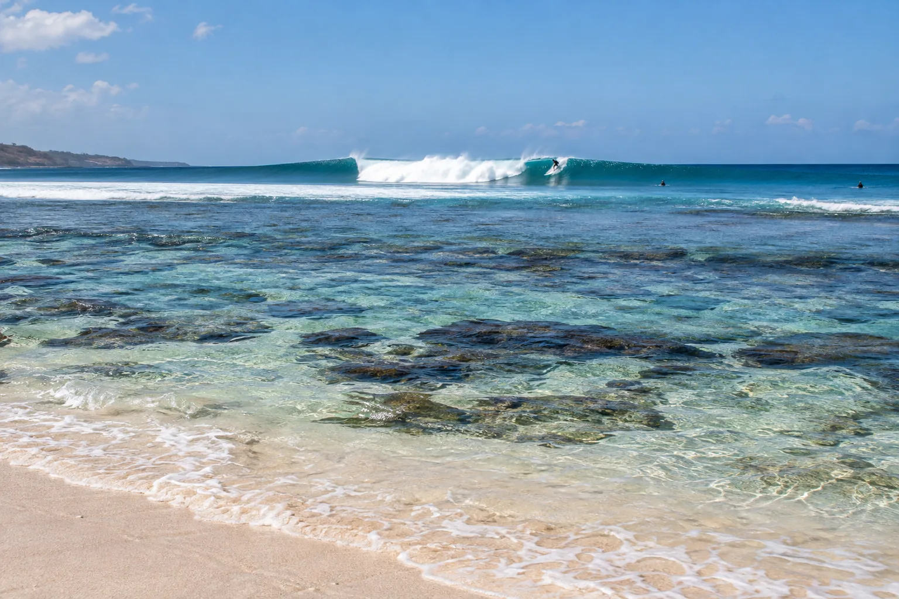

Lakey Peak
Sumbawa, Indonésie · surf

Pic de récif en A, droite et gauche, qui fonctionne presque tous les jours de la saison sèche.
- Lieu
- Sumbawa, Indonésie
- Niveau
- Intermédiaire
- Activités
- surf
- Type d'eau
- Mer / océan
- Coordonnées
- -8.81, 118.37 (position approximative du secteur)
Dangers à connaître
- Récif.
- Line-up chargé.
Le conseil d'Ocean Buddy
Surfe tôt : le vent de terre est idéal le matin.
Ouvrir dans Ocean Buddy Télécharger sur l'App Store
Source : Fiche Ocean Buddy · septembre 2026 · à vérifier localement.